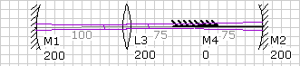
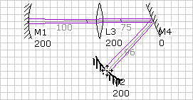
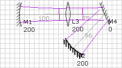

LaserCanvas 5 > Tutorials > Simple Resonator >
One of the most important features of LaserCanvas is that it represents laser cavities in two dimensions, exactly how they would be built on an optical breadboard. In this section, we add a mirror to fold the cavity.

By default, a flat mirror is inserted. Its radius of curvature is displayed as 0.


The Mode Scale is the magnification factor for the displayed mode size. For example, if the mode is 100 um and the Mode Scale is 100, then the mode is displayed as 100 um x 100 = 10 mm.